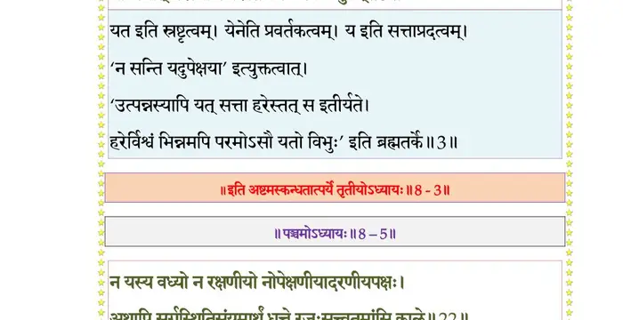

स्कन्ध 8 · अध्याय 3
श्लोक १
श्रीशुक उवाच–
एवं व्यवसितो बुद्ध्या समाधाय मनो हृदि ।
जजाप परमं जाप्यं प्राग्जन्मन्यनुशिक्षितम् ।। १ ।।
एवं व्यवसितो बुद्ध्या समाधाय मनो हृदि ।
जजाप परमं जाप्यं प्राग्जन्मन्यनुशिक्षितम् ।। १ ।।
श्लोक २
गजेन्द्र उवाच–
ओं नमो भगवते तस्मै यत एतच्चिदात्मकम् ।
पुरुषायादिबीजाय परेशायाभिधीमहि ।। २ ।।
ओं नमो भगवते तस्मै यत एतच्चिदात्मकम् ।
पुरुषायादिबीजाय परेशायाभिधीमहि ।। २ ।।
श्लोक ३
यस्मिन्निदं यतश्चेदं येनेदं य इदं स्वयम् ।
योऽस्मात् परस्माच्च परस्तं प्रपद्ये स्वयम्भुवम् ।। ३ ।।
योऽस्मात् परस्माच्च परस्तं प्रपद्ये स्वयम्भुवम् ।। ३ ।।
भागवततात्पर्यनिर्णय

श्लोक ४
यः स्वात्मनीदं निजमाययाऽर्पितं क्वचिद् विभातं क्व च तत्तिरोहितम् ।
अविद्धदृक् साक्ष्युभयं तदीक्षते स आत्ममूलोऽवतु मां परात्परः ।।४।।
अविद्धदृक् साक्ष्युभयं तदीक्षते स आत्ममूलोऽवतु मां परात्परः ।।४।।
श्लोक ५
कालेन पञ्चत्वमितेषु कृत्स्नशो लोकेषु लीनेषु च सर्वहेतुषु ।
तमस्तदासीद् गहनं गभीरं यस्तस्य पारेऽभिविराजते विभुः।। ५ ।।
तमस्तदासीद् गहनं गभीरं यस्तस्य पारेऽभिविराजते विभुः।। ५ ।।
श्लोक ६
न यस्य देवा ऋषयः पदं विदुर्जन्तुः पुनः कोऽर्हति गन्तुमीरितम् ।
यथा नटस्याकृतिभिर्विचेष्टतो दुरन्वयानुक्रमणः स माऽवतु।। ६ ।।
यथा नटस्याकृतिभिर्विचेष्टतो दुरन्वयानुक्रमणः स माऽवतु।। ६ ।।
श्लोक ७
दिदृक्षवो यस्य पदं सुमङ्गलं विमुक्तसङ्गा मुनयः सुसाधवः ।
चरन्त्यलोकव्रतमव्रणं वने सर्वात्मभूताः सुहृदः स मे गतिः।। ७ ।।
चरन्त्यलोकव्रतमव्रणं वने सर्वात्मभूताः सुहृदः स मे गतिः।। ७ ।।
श्लोक ८
न विद्यते यस्य च जन्म कर्म वा न नामरूपे गुणदोष एव वा ।
तथाऽपि लोकाश्रयसंभवाय यः स्वमायया तान्यनुकालमृच्छति।।८।।
तथाऽपि लोकाश्रयसंभवाय यः स्वमायया तान्यनुकालमृच्छति।।८।।
श्लोक ९
तस्मै नमः परेशाय ब्रह्मणेऽनन्तशक्तये ।
अरूपायोरुरूपाय नम आश्चर्यकर्मणे ।। ९ ।।
अरूपायोरुरूपाय नम आश्चर्यकर्मणे ।। ९ ।।
श्लोक १०
नम आत्मप्रदीपाय साक्षिणे परमात्मने ।
नमो गिरां विदूराय मनसश्चेतसामपि ।। १० ।।
नमो गिरां विदूराय मनसश्चेतसामपि ।। १० ।।
श्लोक ११
सत्वेन प्रतिलभ्याय नैष्कर्म्येण विपश्चिताम् ।
नमः कैवल्यनाथाय निर्वाणसुखसंविदे ।। ११ ।।
नमः कैवल्यनाथाय निर्वाणसुखसंविदे ।। ११ ।।
श्लोक १२
नमः शान्ताय घोराय गूढाय गुणकर्मणे ।
निर्विशेषाय साम्याय नमो ज्ञानघनाय च ।। १२ ।।
निर्विशेषाय साम्याय नमो ज्ञानघनाय च ।। १२ ।।
श्लोक १३
क्षेत्रज्ञाय नमस्तुभ्यं सर्वाध्यक्षाय साक्षिणे ।
पुरुषायात्ममूलाय मूलप्रकृतये नमः ।। १३ ।।
पुरुषायात्ममूलाय मूलप्रकृतये नमः ।। १३ ।।
श्लोक १४
सर्वेन्द्रियगुणद्रष्टे्रे सर्वप्रत्ययहेतवे ।
असत्याच्च विमुक्ताय सदाभासाय ते नमः ।। १४ ।।
असत्याच्च विमुक्ताय सदाभासाय ते नमः ।। १४ ।।
श्लोक १५
नमो नमस्तेऽखिलकारणाय नारायणायार्तिविनाशनाय ।
सर्वागमाम्नायमहार्णवाय नमोऽपवर्गाय परायणाय।। १५ ।।
सर्वागमाम्नायमहार्णवाय नमोऽपवर्गाय परायणाय।। १५ ।।
श्लोक १७
गुणारणिच्छन्नचिदूष्मपाय तत्क्षोभविस्फूर्जितमानसाय ।
युक्तात्मभिः स्वहृदये परिभाविताय ज्ञानात्मने भगवते नम ईश्वराय ।। १७ ।।
युक्तात्मभिः स्वहृदये परिभाविताय ज्ञानात्मने भगवते नम ईश्वराय ।। १७ ।।
श्लोक १७
यं धर्मकामार्थविमुक्तकामा भजन्त इष्टां गतिमाप्नुवन्ति ।
किन्त्वाशिषो रात्यपि देहमव्ययं करोतु मेऽदभ्रदयो विमोक्षणम् ।। १७ ।।
किन्त्वाशिषो रात्यपि देहमव्ययं करोतु मेऽदभ्रदयो विमोक्षणम् ।। १७ ।।
श्लोक १८
एकान्तिनो यस्य न कञ्चनार्थं वाञ्छन्ति ते वै भगवत्प्रधानाः ।
अत्यद्भुतं यच्चरितं सुमङ्गलं गायन्त आनन्दसमुद्रमग्नाः।। १८ ।।
अत्यद्भुतं यच्चरितं सुमङ्गलं गायन्त आनन्दसमुद्रमग्नाः।। १८ ।।
श्लोक १९
तमक्षरं ब्रह्म परं परेशमव्यक्तमाध्यात्मिकयोगगम्यम् ।
अतीन्द्रियं सूक्ष्ममिवातिदूरमनन्तमाद्यं परिपूर्णमीडे।। १९ ।।
अतीन्द्रियं सूक्ष्ममिवातिदूरमनन्तमाद्यं परिपूर्णमीडे।। १९ ।।
श्लोक २०
यस्य ब्रह्मादयो देवा वेदा लोकाश्चरचराः ।
नामरूपविभेदेन जल्प्या च कलया कृताः ।। २० ।।
नामरूपविभेदेन जल्प्या च कलया कृताः ।। २० ।।
श्लोक २१
यथाऽर्चिषोऽग्नेः सवितुर्गभस्तयो निर्यान्ति संयान्त्यसकृत् स्वरोचिषः ।
तथा यतोऽयं गुणसम्प्रवाहो बुद्धिर्मनः खानि शरीरसर्गः ।। २१ ।।
तथा यतोऽयं गुणसम्प्रवाहो बुद्धिर्मनः खानि शरीरसर्गः ।। २१ ।।
श्लोक २२
स वै न देवासुरमर्त्यतिर्यङ् न स्त्री न षण्ढो न पुमान् न जन्तुः ।
नायं गुणः कर्म न सन् न चासन् निषेधशेषो जयतादशेषः ।। २२ ।।
नायं गुणः कर्म न सन् न चासन् निषेधशेषो जयतादशेषः ।। २२ ।।
श्लोक २३
जिजीविषे नाहमिहामुया किमन्तर्बहिश्चावृतयेभयोन्या ।
इच्छामि कालेन न यस्य विप्लवस्तस्यात्मलोकावरणस्य मोक्षणम् ।। २३ ।।
इच्छामि कालेन न यस्य विप्लवस्तस्यात्मलोकावरणस्य मोक्षणम् ।। २३ ।।
श्लोक २४
सोऽहं विश्वसृजं विश्वमविश्वं विश्ववेदसम् ।
विश्वात्मानमजं ब्रह्म प्रणतोऽस्मि परं पदम् ।। २४ ।।
विश्वात्मानमजं ब्रह्म प्रणतोऽस्मि परं पदम् ।। २४ ।।
श्लोक २५
योगरन्धितकर्माणो हृदि योगविभाविते ।
योगिनो यं प्रपश्यन्ति योगीशं तं नतोऽस्म्यहम् ।। २५ ।।
योगिनो यं प्रपश्यन्ति योगीशं तं नतोऽस्म्यहम् ।। २५ ।।
श्लोक २६
नमो नमस्तुभ्यमसह्यवेगशक्तित्रयायाखिलधीगुणाय ।
प्रपन्नपालाय दुरन्तशक्तये बुद्धीन्द्रियाणामनवाप्यवर्त्मने ।। २६ ।।
प्रपन्नपालाय दुरन्तशक्तये बुद्धीन्द्रियाणामनवाप्यवर्त्मने ।। २६ ।।
श्लोक २७
नायं वेद स्वमात्मानं यच्छक्त्याऽहं धिया हतः ।
तं दुरत्ययमाहात्म्यं भगवन्तं नतोऽस्म्यहम्।। २७ ।।
तं दुरत्ययमाहात्म्यं भगवन्तं नतोऽस्म्यहम्।। २७ ।।
श्लोक २८
श्रीशुक उवाच–
एवं गजेन्द्रमुपवर्णितनिर्विशेषं ब्रह्मादयो विविधलिङ्गभिदाभिमानाः ।
नैते यदोपससृपुर्निखिलात्मकत्वात् तत्राखिलामरवरो हरिराविरासीत्।। २८ ।।
एवं गजेन्द्रमुपवर्णितनिर्विशेषं ब्रह्मादयो विविधलिङ्गभिदाभिमानाः ।
नैते यदोपससृपुर्निखिलात्मकत्वात् तत्राखिलामरवरो हरिराविरासीत्।। २८ ।।
श्लोक २९
तं तद्वदार्तमुपलभ्य जगन्निवासः स्तोत्रं निशम्य दिविजैः सह संस्तुवद्भिः ।
छन्दोमयेन गरुडेन समुह्यमानश्चक्रायुधो ह्यगमदाशु यतो गजेन्द्रः ।। २९ ।।
छन्दोमयेन गरुडेन समुह्यमानश्चक्रायुधो ह्यगमदाशु यतो गजेन्द्रः ।। २९ ।।
श्लोक ३०
सोऽन्तः सरस्युरुबलेन गृहीत आर्तो
दृष्ट्वा गरुत्मति हरिं ख उपात्तचक्रम् ।
उत्क्षिप्य साम्बुजकरं गिरमाह कृच्छ्रा-
न्नारायणाखिलगुरो भगवन् नमस्ते।। ३० ।।
दृष्ट्वा गरुत्मति हरिं ख उपात्तचक्रम् ।
उत्क्षिप्य साम्बुजकरं गिरमाह कृच्छ्रा-
न्नारायणाखिलगुरो भगवन् नमस्ते।। ३० ।।
श्लोक ३१
तं वीक्ष्य पीडितमजः सहसाऽवतीर्य
सग्राहमाशु सरसः कृपयोज्जहार ।
ग्राहाद् विपाटितमुखादरिणा गजेन्द्रं
सम्पश्यतां हरिरमूमुचदुस्रियाणाम् ।। ३१ ।।
सग्राहमाशु सरसः कृपयोज्जहार ।
ग्राहाद् विपाटितमुखादरिणा गजेन्द्रं
सम्पश्यतां हरिरमूमुचदुस्रियाणाम् ।। ३१ ।।
।। इति श्रीमद्भागवते अष्टमस्कन्धे तृतीयोऽध्यायः ।